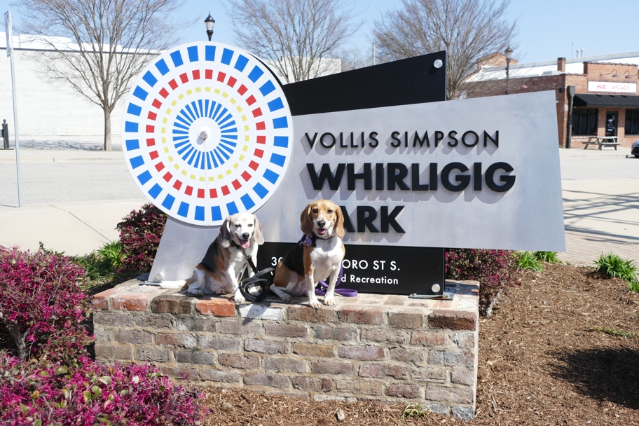

When we visited Mr. Simpson in 2012 he laughed that people from town who had bought a few of his works were having trouble setting them up properly downtown, though he'd set them up at his place all by himself. Well, the people from town did all right! Mr. Simpson's whirligigs have been restored and installed in a big park in Wilson. There's a nice visitor center and places to eat and drink. Don't miss it if you ever drive through North Carolina on I-95.
Halley Beagle North Carolina Wallace Beagle Wilson